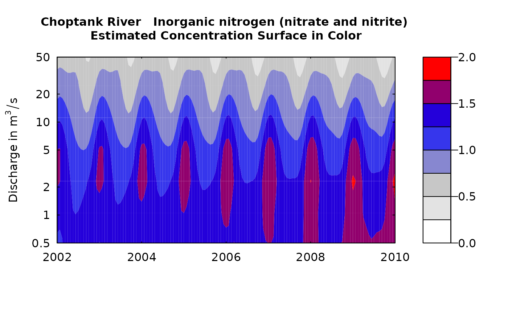
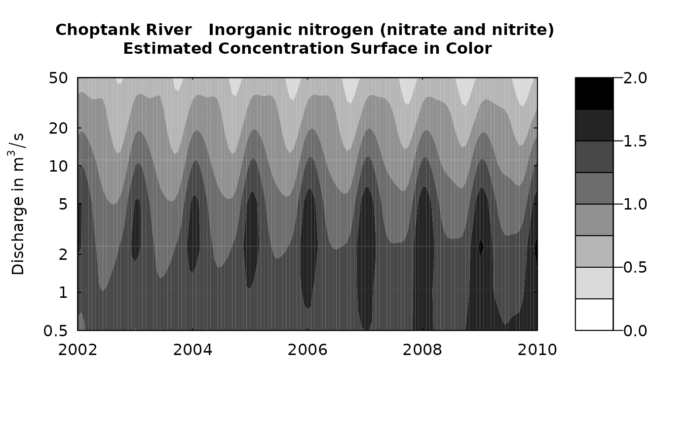

Color contour plot of the estimated surfaces as a function of discharge and time (surfaces include log concentration, standard error, and concentration)
Source:R/plotContours.R
plotContours.RdThese plots are normally used for plotting the estimated concentration surface (whatSurface=3) but can be used to explore the
estimated surfaces for the log of concentration or for the standard error (in log space) which is what determines the bias correction.
The plots are often more interpretable when the time limits are only about 4 years apart.
To explore changes over a long time period it is best to do this multiple times, for various time slices of 4 years (for example) or to use the function plotDiffContours.
Although there are a lot of optional arguments to this function, most are set to a logical default.
Data come from named list, which contains a Sample dataframe with the sample data, a Daily dataframe with the daily flow data, and an INFO dataframe with metadata.
plotContours(eList, yearStart, yearEnd, qBottom = NA, qTop = NA, whatSurface = 3, qUnit = 2, contourLevels = NA, span = 60, pval = 0.05, printTitle = TRUE, vert1 = NA, vert2 = NA, horiz = NA, tcl = 0.03, flowDuration = TRUE, customPar = FALSE, yTicks = NA, tick.lwd = 1, usgsStyle = FALSE, lwd = 2, cex.main = 1, cex.axis = 1, color.palette = colorRampPalette(c("white", "gray", "blue", "red")), ...)
Arguments
| eList | named list with at least the Daily and INFO dataframes, and surfaces matrix |
|---|---|
| yearStart | numeric value for the starting date for the graph, expressed as decimal year (typically whole number such as 1989.0) |
| yearEnd | numeric value for the ending date for the graph, expressed as decimal year, (for example 1993.0) |
| qBottom | numeric value for the bottom edge of the graph, expressed in the units of discharge that are being used (as specified in qUnit). NA will choose a "pretty" lower limit nearest to the 5% of discharge. If yTicks are specified, then the first value of yTicks becomes the lowest discharge shown on the figure. |
| qTop | numeric value for the top edge of the graph, expressed in the units of discharge that are being used (as specified in qUnit). NA will choose a "pretty" upper limit nearest to the 95% of discharge. If yTicks are specified, then the last value of yTicks becomes the highest discharge shown on the figure. |
| whatSurface | numeric value, can only accept 1, 2, or 3; whatSurface=1 is yHat (log concentration), whatSurface=2 is SE (standard error of log concentration), and whatSurface=3 is ConcHat (unbiased estimate of concentration), default = 3. |
| qUnit | object of qUnit class. |
| contourLevels | numeric vector containing the contour levels for the contour plot, arranged in ascending order, default is NA (which causes the contour levels to be set automatically, based on the data) |
| span | numeric, it is the half-width (in days) of the smoothing window for computing the flow duration information, default = 60 |
| pval | numeric, the probability value for the lower flow frequency line on the graph |
| printTitle | logical variable if TRUE title is printed, if FALSE not printed |
| vert1 | numeric, the location in time for a black vertical line on the figure, yearStart<vert1<yearEnd, default is NA (vertical line is not drawn) |
| vert2 | numeric, the location in time for a black vertical line on the figure, yearStart<vert2<yearEnd, default is NA (vertical line is not drawn) |
| horiz | numeric, the location in discharge for a black horizontal line on the figure, qBottom<vert1<qTop, default is NA (no horizontal line is drawn) |
| tcl | numeric, length of tick marks in inches, default is 0.03 |
| flowDuration | logical variable if TRUE plot the flow duration lines (5 and 95 flow percentiles), if FALSE do not plot them, default = TRUE |
| customPar | logical defaults to FALSE. If TRUE, par() should be set by user before calling this function (for example, adjusting margins with par(mar=c(5,5,5,5))). If customPar FALSE, EGRET chooses the best margins. |
| yTicks | vector of yTick labels and marks that will be plotted in log space. (for example yTicks = c(3, 5, 10, 20, 50, 100, 200, 400). The first and last values determine the range of the y axis. If NA, the tick marks will be automatically generated. |
| tick.lwd | line width for axis ticks, default is 1 |
| usgsStyle | logical option to use USGS style guidelines. Setting this option to TRUE does NOT guarantee USGS complience. It will only change automatically generated labels. |
| lwd | numeric, line width of flowDuration curve, default is 2 |
| cex.main | magnification to be used for main titles relative to the current setting of cex |
| cex.axis | magnification to be used for axis annotation relative to the current setting of cex |
| color.palette | a function that creates a color palette for the contour plot. Default goes from white to gray to blue to red
using the function |
| ... | arbitrary functions sent to the generic plotting function. See ?par for details on possible parameters |
Examples
yearStart <- 2001 yearEnd <- 2010 qBottom <- 0.5 qTop<- 22 clevel <- seq(0,3.5,0.5) eList <- Choptank_eList plotContours(eList, yearStart,yearEnd,qBottom,qTop, contourLevels = clevel)plotContours(eList, yearStart,yearEnd,qBottom=0.1,qTop=NA, contourLevels = clevel)yTicksModified <- c(.1,1,10,25) plotContours(eList, yearStart,yearEnd,qBottom,qTop, contourLevels = clevel,yTicks=yTicksModified,flowDuration=FALSE)colors <- colorRampPalette(c("white","red")) plotContours(eList, yearStart,yearEnd,qBottom,qTop, contourLevels = clevel,yTicks=yTicksModified, color.palette=colors,flowDuration=FALSE)colors2 <- heat.colors # Some other options: topo.colors, terrain.colors, cm.colors plotContours(eList, yearStart,yearEnd,qBottom,qTop, contourLevels = clevel,color.palette=colors2,lwd=2,flowDuration=FALSE)plotContours(eList, yearStart,yearEnd,qBottom,qTop, contourLevels = clevel,cex.axis=2,flowDuration=FALSE)par(mar=c(5,8,5,8)) plotContours(eList, yearStart,yearEnd,qBottom,qTop, contourLevels = clevel,customPar=TRUE,printTitle=FALSE,flowDuration=FALSE)